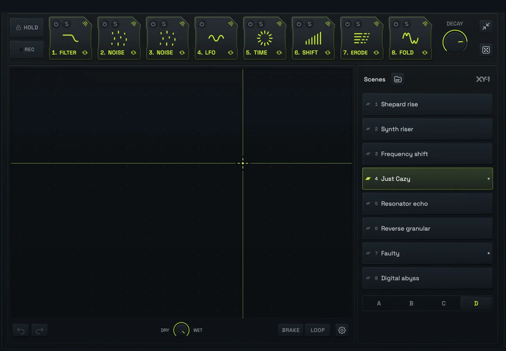
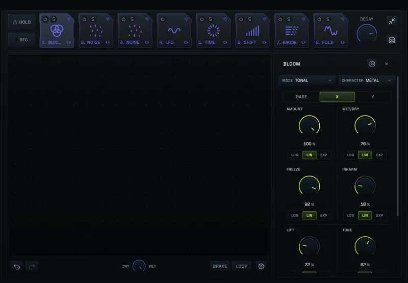
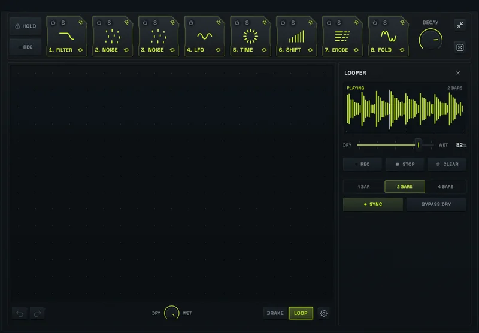
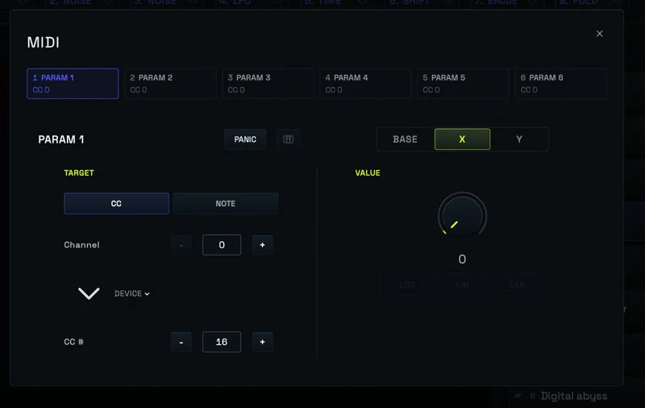
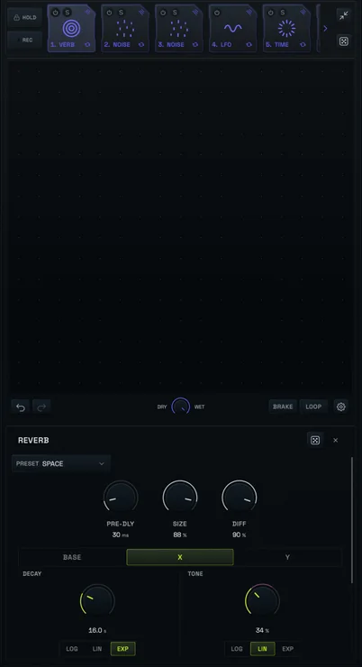
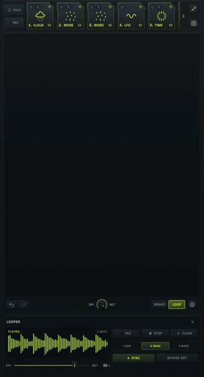
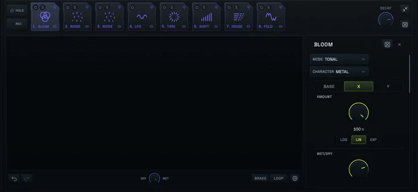

RMXY-1
Live toolbox for iPhone and iPad.

One XY pad
RMXY-1 is a live performance surface for audio effects. Eight effect slots share one XY pad.
FX parameters have mappable values. Give them a target on X and Y, and use the XY pad to play the effect chain.
-
Filter frequency8.7 kHzBase 8.7 kHz, X to 112 Hz
-
Reverb wet/dry10%Base 10%, Y to 85%
-
Delay feedback30%Base 30%, X to 65%, Y to 90%
-
Bloom amount0%Base 0%, X to 80%
Drag the square or tap the pad. The tick on each bar is its Base value.
Eight effect slots
Reorder, bypass, solo or replace any slot. Choose from nineteen processors: filters, drive, reverb, delay, granular effects, generators and more.
Tap a slot to bypass it.
Base, X and Y
Every parameter has a Base value and a target on X and on Y. Each axis has its own LOG, LIN or EXP curve.

Sound design and insert effects
Sound design and exploration
Generators make sound without an input. Randomize a whole scene, then map what you find to the pad.
Insert effect chain
Load RMXY-1 as an AUv3 effect in AUM or another host, or run it standalone with your audio interface.
Audio looper
Record one, two or four bars, synced or free. Overdub, recapture, and send the loop through the chain.

Scenes
A scene is a chain with its mappings. Eight scenes make a bank and four banks make a program: 32 scenes. Edits stay a working copy until you save.
Bank D, scene 4
MIDI out
Six lanes send MIDI CC or notes to external gear, such as a Digitakt II or a MicroFreak. One move on the pad changes your effects and your hardware.



iPhone
The same surface in portrait and landscape.



Specifications
- Platforms
- iPhone and iPad
- Formats
- Standalone app and AUv3 audio effectAUv3 runs in AUM and other compatible hosts
- Effect slots
- Eight, with bypass, solo, reorder and replace
- Processors
- Filter, EQ, Distortion, Fold, Erode, Reverb, Delay, Stereo Widener, Modulation, Shifter, Ring Mod, Time FX, Grain Shifter, Granular Cloud, Noise, OSC, Shepard, Resonator, BloomPlus LFO, MIDI out and AUv3 hosting (standalone)
- Performance
- XY pad with Base, X and Y targets per parameterLOG, LIN and EXP curves · Hold · one-bar motion recording · Brake · Decay
- Looper
- 1, 2 or 4 bars · sync or free · overdub · recapture · Bypass Dry
- Library
- 4 banks × 8 scenes per program · scene library · import and export.rmxyscene and .rmxyprogram files
- MIDI
- 6 output lanes of CC or notes · MIDI clock sync in standaloneIncoming MIDI control through the AUv3 host
- Appearance
- Dark, Onyx, Bone Light, Pure White, Adaptive · three text sizes
- Privacy
- No account, analytics, advertising or tracking. Audio is processed on device.